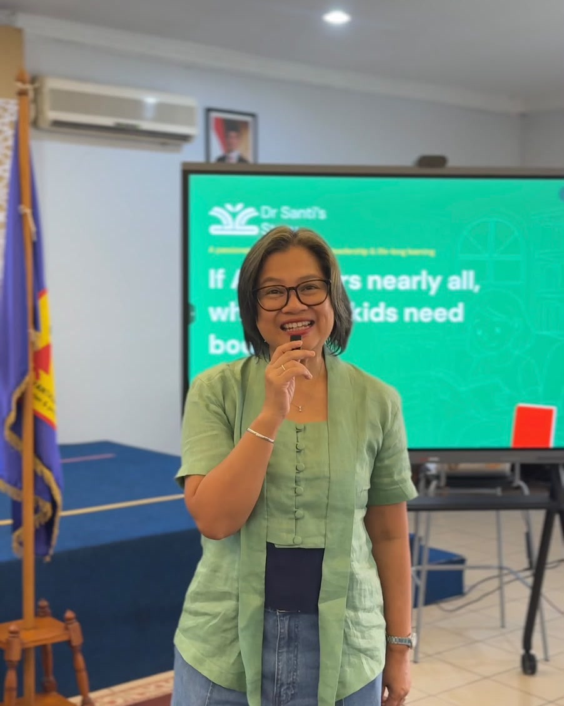

Warm parenting everyday
how we develop closeness with our children despite there always being gadgets around.
Invite Santi Dharmaputra PhD, the main engine behind the brand Dr Santi’s Story (™) to your school or community, for a warm sharing session about parents’ leadership in the home.
The intimate discussion will cover the concept, tips and tricks when communicating with children, reading habits in the family and parents’ lifelong learning to effectively lead the family.
The thought provoking sharing session will be equipped with take-home guidance and followed by a 30-mins coaching.
The session will be tailor made to your needs. Santi is happy to cater to specific topic requests.

drWe sometimes forget that we need to view and approach our children and family in a more holistic way.
We tend to follow the pace of the crowd and unintentionally ignore the facts that every family has their own rhythm, questions and challenges.
Hence, the session with Dr Santi’s Story (™) is not about lecturing or focusing on one formula. But Santi will invite participants to listen to each other, share point of view and bring home one or two points to ponder and act upon.
Below is the highlight.
how we develop closeness with our children despite there always being gadgets around.
How to read, understand the story and having conversation about the book. How to bring intellectual conversation to everyday life with our children.
How to listen to our children so they listen to us, how to build trust between parents and children.
how to develop our children’s curious mindset so that they enjoy seeking knowledge throughout their lifetime.
We provide different format sessions.
small audience between 10-30 people, for a conversation with intimate Q&A.
for bigger audience, 30 people and beyond, discussion with ample time for Q&A
for small or big audiences. They will discuss and apply the the tips & tricks on the spot, in a fun and engaging series of activities.
Past events
Conversations at Cartea and Fantasia—each with its own audience, questions, and way of gathering.
Every session is wrapped around the context of the audience.
Event with Dr Santi’s Story (™)
Know Santi’s approach and points to be included in the session with your school/community
Invite Dr Santi’s Story (™)
We will learn about your community and we will contact you to discuss the best approach for your session.
We will reply within 1-2 days. Please fill in the form
About Dr Santi’s Story (™)
Santi Dharmaputra, PhD, the main engine behind Dr Santi’s Story (™) is a speaker and lifelong learner. She invites people to revisit and reflect things that have been taken for granted: the way we listen, read and other daily habit. With 20+ experience in the corporate and education industries in The Netherlands, Australia and Indonesia, Santi brings a new perspective on parenting, literacy culture, parent-child communication and fresh understanding on lifelong learning. Every conversation is adapted to the goal and needs of the audience. Let’s have a chat!
Let’s have a chat!